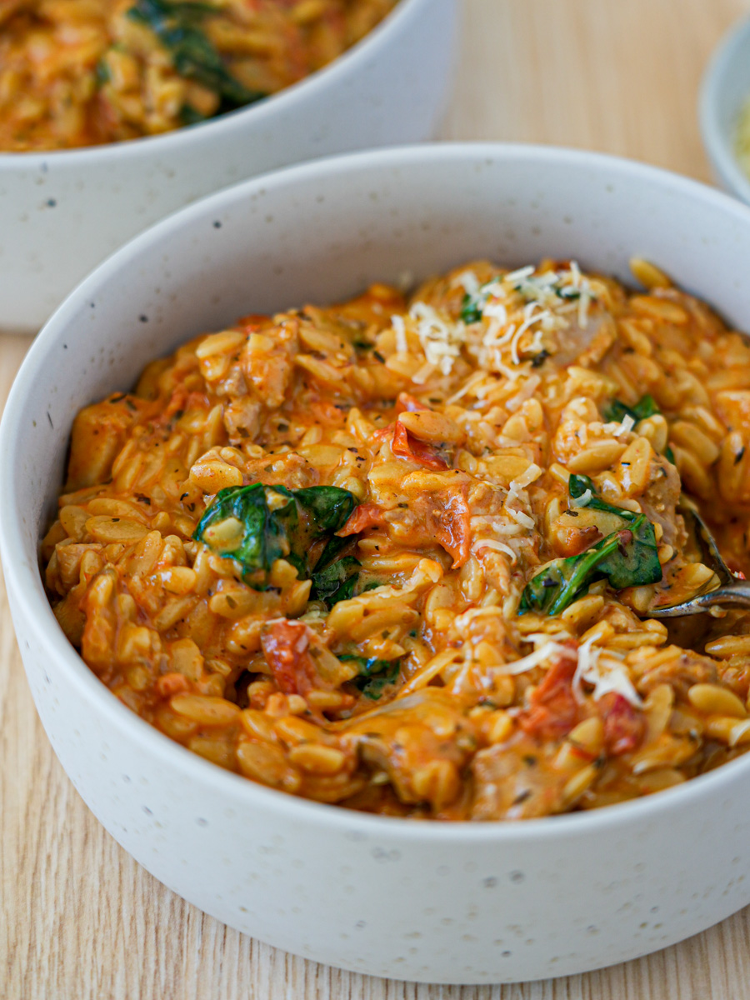

One-pot chicken orzo

Description
A creamy and filling orzo recipe that is all made in one pot. I recommend using a large pan with tall sides (also known as a French pan or dutch oven).
Ingredients
- 400g chicken thigh
- 500g risoni
- 400g diced tomatoes
- 1 large onion
- 1 red capsicum
- 750mL chicken stock
- 200mL heavy cream
- Parmesan cheese (add according to taste)
- Red wine (for deglazing the pan)
Herb mix
- 1 tablespoon olive oil
- 1 teaspoon salt
- 1-2 tablespoons Italian herb mix
Steps
- Finely chop the onion and capsicum and set aside.
- Dice the chicken into small pieces and drizzle over with olive oil. Add the herb mix to the chicken and combine with hands.
- Heat the french pan to medium-high and brown the chicken until just cooked.
- Adjust heat to low and remove chicken from pan. Add capsicum and onions and saute for 2-3 minutes. While cooking, add red wine to deglaze brown spots on the base of the pan.
- Adjust heat to medium and add chicken stock and tomatoes. When the liquid begins to bubble slightly, add orzo.
- Cook the orzo for as long as indicated on the package. Stir the orzo continuously to prevent it from sticking to the bottom of the pan
- When the Orzo is almost cooked, add cream and stir through.
- Add the cooked chicken back into the orzo and recombine.
- If wanted, add Parmesan cheese and stir through. Serve.